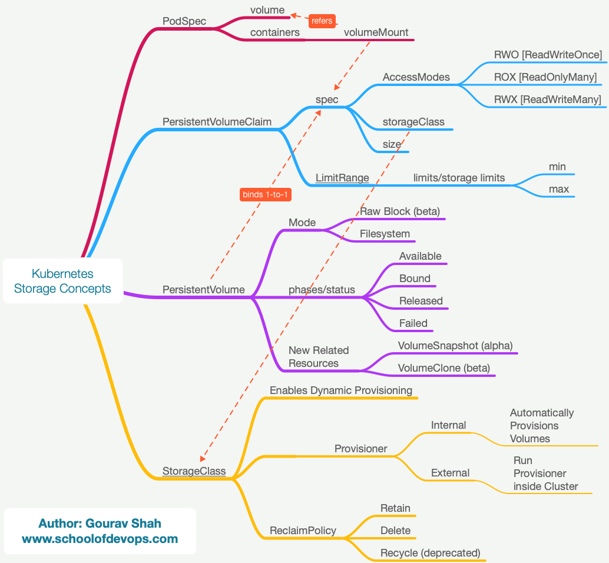

Dynamic Storage Provisioning
This tutorial explains how kubernetes storage works and the complete workflow for the dynamic provisioning. The topics include
- Storage Classes
- PersistentVolumeClaim
- persistentVolume
- Provisioner
Pre Reading :
Concepts

Deploy Database with a Persistent Volume Claim
Lets begin by redeploying the db deployment, this time by configuring it to refer to the persistentVolumeClaim
file: db-deploy-pvc.yaml
...
spec:
containers:
- image: postgres:9.4
imagePullPolicy: Always
name: db
ports:
- containerPort: 5432
protocol: TCP
#mount db-vol to postgres data path
volumeMounts:
- name: db-vol
mountPath: /var/lib/postgresql/data
#create a volume with pvc
volumes:
- name: db-vol
persistentVolumeClaim:
claimName: db-pvc
Apply db-deploy-pcv.yaml as
kubectl apply -f db-deploy-pvc.yaml
To monitor resources for this lab, open a new terminal and start watching for relevant objecting using the following command.
watch kubectl get pods,pvc,pv,storageclasses
We will call the terminal where you are running the above command as your Monitoring Screen.
- Observe and note if the pod for db is launched.
- What state is it in ? why?
- Has the persistentVolumeClaim been bound to a persistentVolume ? Why?
Creating a Persistent Volume Claim
switch to project directory
cd k8s-code/projects/instavote/dev/
Create the following file with the specs below
file: db-pvc.yaml
kind: PersistentVolumeClaim
apiVersion: v1
metadata:
name: db-pvc
spec:
accessModes:
- ReadWriteOnce
volumeMode: Filesystem
resources:
requests:
storage: 200Mi
storageClassName: local-path
if you using a KIND bases environment, set StorageClassName to "standard" instead of "local-path" in the above file. In case of KIND environment, no further configuration of Storageclass/Provisioner is needed.
create the Persistent Volume Claim and validate
kubectl get pvc
kubectl apply -f db-pvc.yaml
kubectl get pvc,pv
- Is persistentVolumeClaim created ? Why ?
- Is persistentVolume created ? Why ?
- Is the persistentVolumeClaim bound with a persistentVolume ?
Set up Storage Provisioner in kubernetes
Skip this step is you are using KIND based environment.
Launch a local path provisioner using the following command,
kubectl apply -f https://raw.githubusercontent.com/rancher/local-path-provisioner/master/deploy/local-path-storage.yaml
This will create all the objects required to setup a local-path provisioner. At this time, you should also see storageclass created for local-path on your monitoring screen.
kubectl get storageclass
kubectl get pods
kubectl logs -f local-path-provisioner-xxxx -n local-path-storage
Validate
Now, observe the output of the following commands,
kubectl get pvc,pv
kubectl get pods
- Do you see pvc bound to pv ?
- Do you see the pod for db running ?
Observe the dynamic provisioning in action.
Nano Project
Similar to postgres which mounts the data at /var/lib/postgresql/data and consumes it to store the database files, Redis creates and stores the file at /data path. Your task is to have a volume of size 20Mi created and mounted at /data for the redis container.
You could follow these steps to complete this task
- create a pvc by name redis
- create a volume in the pod spec with type persistentVolumeClaim. Call is redis-data
- add volumeMounts to the container spec (part of the same deployment file) running redis and have it mount redis-data volume created in the pod spec above.
Summary
In this lab, you learnt to setup dynamic provisioning provisioner with Storage Classes, Provisioners and PersistentVolumeClaims.